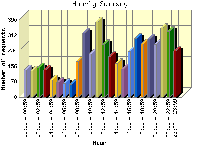
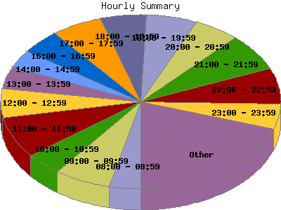

Report generated by Analog 5.91beta1 and Report Magic 2.21
|
Web Server Statistics for "Harish Narayanan (hnarayan) - July 2004" Report generated by Analog 5.91beta1 and Report Magic 2.21 |
The Hourly Summary identifies the level of activity broken down by each hour. Remember that one page hit can result in several server requests as the images for each page are loaded. This summary also compares the level of activity during working hours and after hours as a total for the report time frame.


| Hour | Number of requests | Number of bytes transferred | Percentage of the bytes | Percentage of the requests | |
|---|---|---|---|---|---|
| 1. | 00:00 - 00:59 | 139 | 2.839 MB | 2.62% | 2.78% |
| 2. | 01:00 - 01:59 | 134 | 1.495 MB | 1.38% | 2.68% |
| 3. | 02:00 - 02:59 | 149 | 1.943 MB | 1.79% | 2.98% |
| 4. | 03:00 - 03:59 | 138 | 3.462 MB | 3.19% | 2.76% |
| 5. | 04:00 - 04:59 | 86 | 1.315 MB | 1.21% | 1.72% |
| 6. | 05:00 - 05:59 | 75 | 2.388 MB | 2.20% | 1.50% |
| 7. | 06:00 - 06:59 | 69 | 2.181 MB | 2.01% | 1.38% |
| 8. | 07:00 - 07:59 | 65 | 1.298 MB | 1.20% | 1.30% |
| 9. | 08:00 - 08:59 | 180 | 2.953 MB | 2.72% | 3.60% |
| 10. | 09:00 - 09:59 | 323 | 7.186 MB | 6.63% | 6.45% |
| 11. | 10:00 - 10:59 | 216 | 4.558 MB | 4.21% | 4.31% |
| 12. | 11:00 - 11:59 | 381 | 10.569 MB | 9.75% | 7.61% |
| 13. | 12:00 - 12:59 | 267 | 7.066 MB | 6.52% | 5.33% |
| 14. | 13:00 - 13:59 | 206 | 4.043 MB | 3.73% | 4.11% |
| 15. | 14:00 - 14:59 | 171 | 2.764 MB | 2.55% | 3.42% |
| 16. | 15:00 - 15:59 | 142 | 5.302 MB | 4.89% | 2.84% |
| 17. | 16:00 - 16:59 | 230 | 3.454 MB | 3.19% | 4.59% |
| 18. | 17:00 - 17:59 | 297 | 6.193 MB | 5.71% | 5.93% |
| 19. | 18:00 - 18:59 | 268 | 8.013 MB | 7.39% | 5.35% |
| 20. | 19:00 - 19:59 | 294 | 4.174 MB | 3.85% | 5.87% |
| 21. | 20:00 - 20:59 | 266 | 4.342 MB | 4.00% | 5.31% |
| 22. | 21:00 - 21:59 | 348 | 5.784 MB | 5.33% | 6.95% |
| 23. | 22:00 - 22:59 | 330 | 6.710 MB | 6.19% | 6.59% |
| 24. | 23:00 - 23:59 | 233 | 8.382 MB | 7.73% | 4.65% |
| Work Hours (8:00am-4:59pm) | 2,116 | 47.895 MB | 44.18% | 42.26% | |
| After Hours (5:00pm-7:59am) | 2,891 | 60.519 MB | 55.82% | 57.74% | |
This report was generated on September 29, 2004 12:11.
Report time frame July 1, 2004 02:33 to July 31, 2004 23:40.
| Web statistics report produced by: | |
 Analog 5.91beta1 Analog 5.91beta1 |  Report Magic 2.21 Report Magic 2.21 |